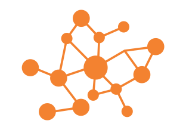
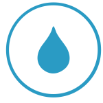
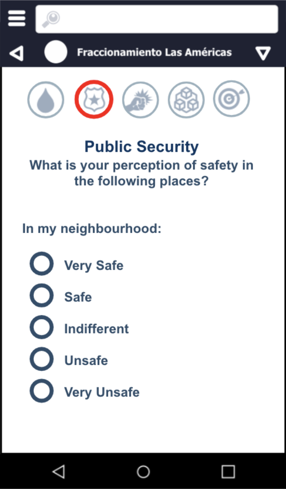
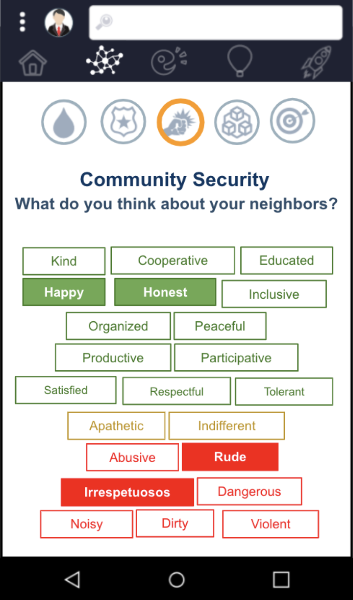
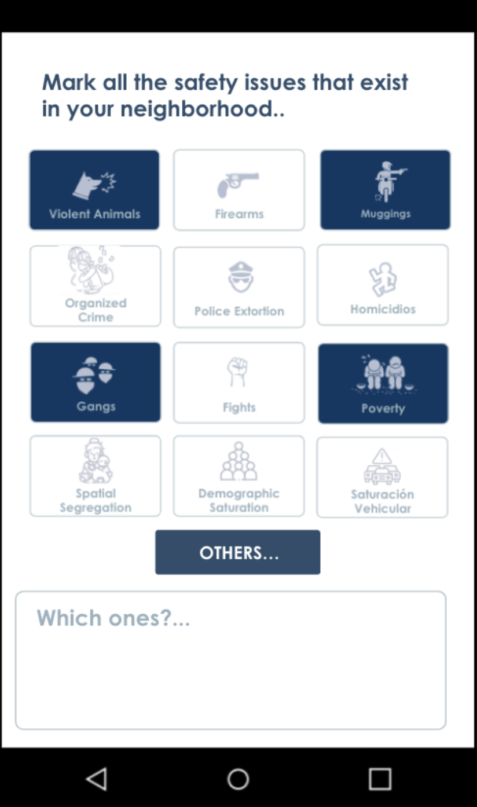

Construyendo comunidades más inteligentes, participativas y conectadas

Ciudadanos Empoderados
Data
Cívica
Líderes
Informados
Guinect es un espacio de participación enfocado a guiar a gobiernos, líderes locales y comunidades a crear e implementar iniciativas y proyectos de impacto económico y social.
Construimos soluciones y procesos de gobernanza más intuitivos, efectivos, transparentes y receptivos...

donde las decisiones, las políticas públicas, la gestión de las ciudades y las iniciativas sociales se guían por datos ciudadanos inteligentes.
Gobernanza Ciudadana
basada en Datos
MONITOREO
LOCAL

GOBERNANZA
DIGITAL

Solicita un Demo
1. MONITOREO LOCAL
Güinect recopila información georreferenciada de la ciudadanía relacionada con:

Servicios Públicos

Prácticas Sostenibles



El monitoreo ciudadano permite
Transformar las ideas, opiniones e iniciativas ciudadanas en datos para:
Crear diagnósticos georreferenciados y dashboards de análisis
Priorizar problemáticas según su impacto social y los votos de la comunidad
Identificar brechas e ineficiencias sistémicas
Orientar una asignación de recursos más eficiente
Definir guías de acción para el desarrollo comunitario
Evitar esfuerzos duplicados y desperdicio de recursos
Generar análisis oportunos para tomar mejores decisiones
Al dar visibilidad a las necesidades más urgentes de una comunidad, es más fácil entender
QUÉ acciones tomar, CÓMO y DÓNDE implementarlas, con QUIÉN colaborar, A QUIÉN dirigir los esfuerzos, y CÓMO ejecutarlos.
ya sea mediante políticas públicas o a través del esfuerzo colectivo de la ciudadanía.
3. GOBERNANZA DIGITAL
Al conectar experiencia y recursos de actores de los sectores político, académico, empresarial y de organizaciones ciudadanas, la plataforma hace posible:
Colaboración multisectorial
Resolución colectiva de problemas
Validación de políticas públicas
Apoyo institucional a iniciativas impulsadas por la comunidad
Confianza y transparencia en la toma de decisiones
Los procesos de colaborazión se construyen alrededor de necesidades reales, ya sea para comunidades locales o para desafíos globales.
Impacto real y resultados medibles para todos
GOBIERNOS
- Diagnósticos georreferenciados
- Diagnósticos comparativos
- Decisiones más inteligentes
- Análisis basado en evidencia
- Mejores resultados en servicios públicos
- Dashboards de análisis
- Reportes de tendencias
- Asignación focalizada de recursos
- Registros de presupuestos participativos
COMUNIDADES
- Indicadores de impacto comunitario
- Iniciativas validadas
- Planes de acción para el desarrollo comunitario
- Seguimiento de avances
- Portafolio de proyectos
- Dashboards de implementación
- Espacios de colaboración vecinal
- Datos ciudadanos accionables
CAMBIO SISTÉMICO
- Redes de expertos en políticas públicas
- Espacios de colaboración
- Procesos para el diseño de políticas públicas
- Datos consistentes entre administraciones
- Modelos de replicación
- Prototipos escalables
- Modelos para vincular recursos
- Mapas de gobernanza local y global
Lidera el futuro de la Gobernanza
Descubre el impacto que nuestra plataforma puede generar en tu ciudad u organización.